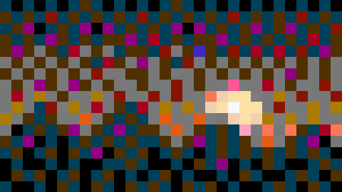
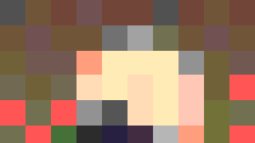
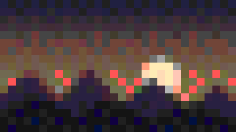
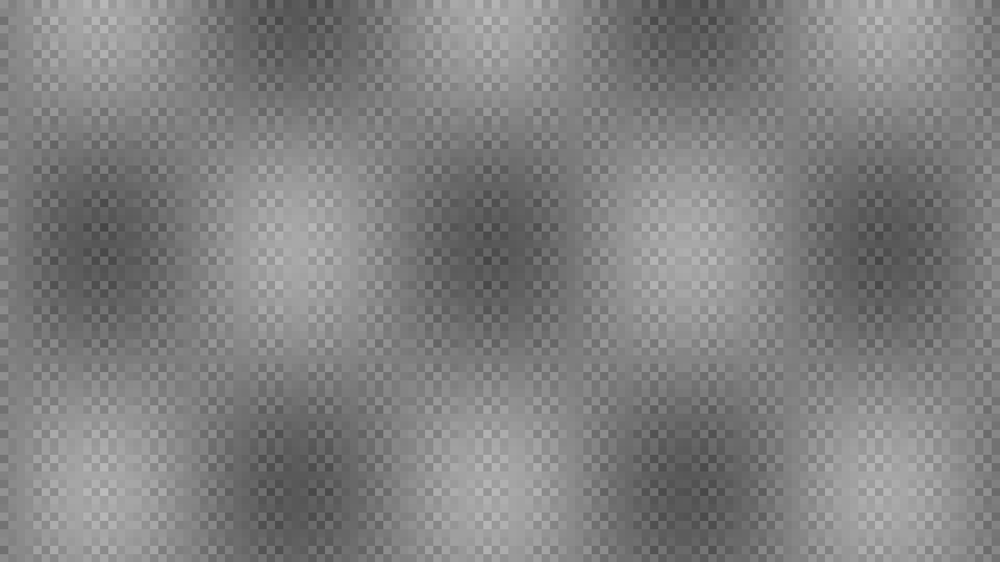
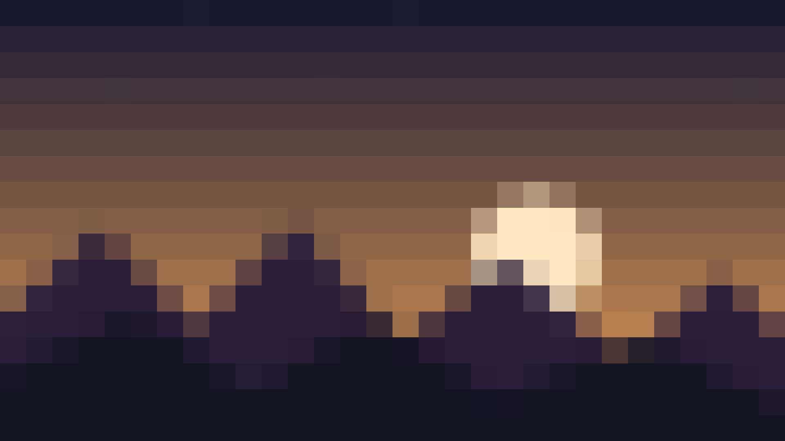
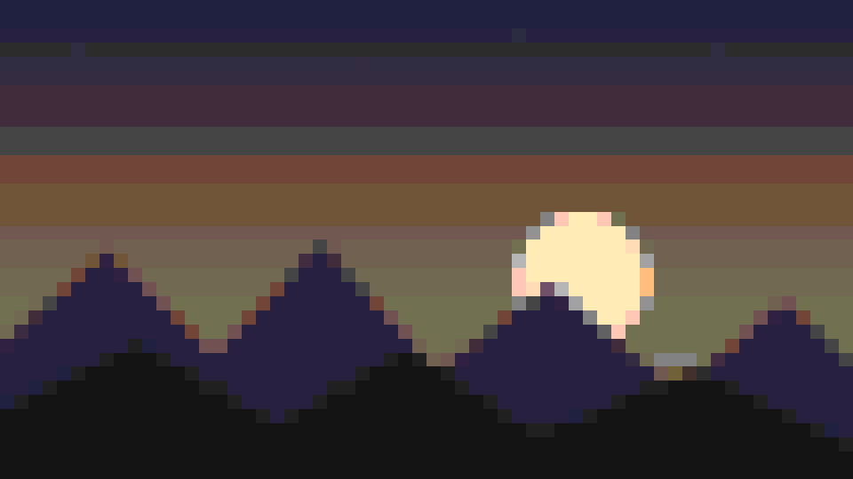
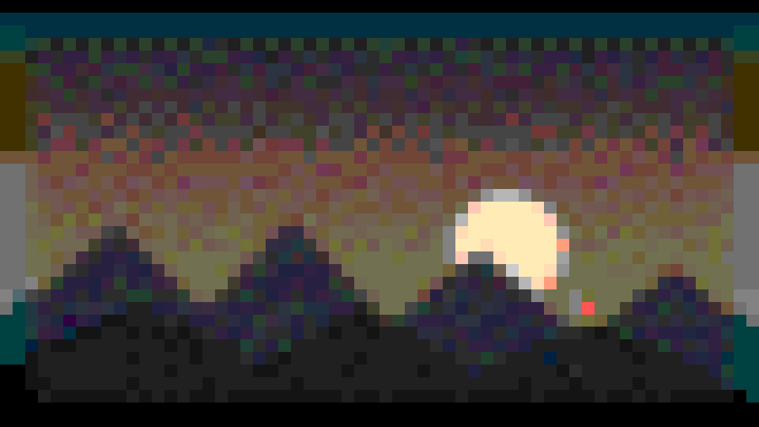
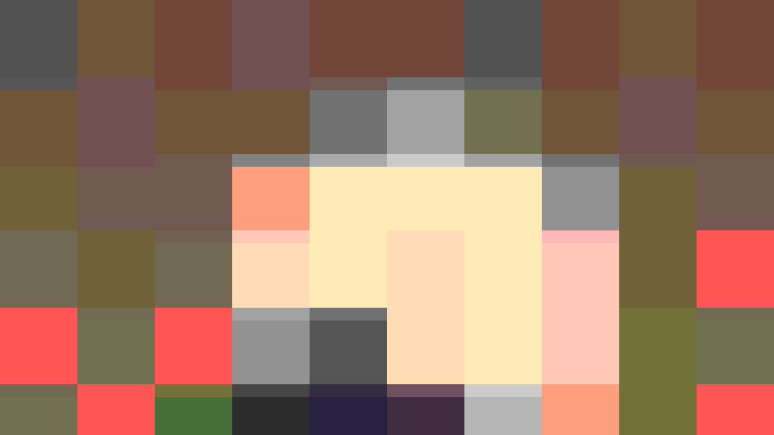
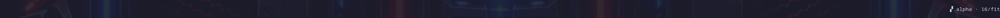
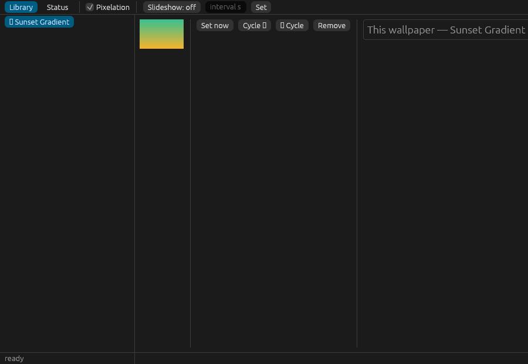

## what it does
Every image in the library renders through the same pipeline: scale down to
block size, optionally quantise to a palette with dithering, stretch back up
with nearest-neighbour. Nothing you set escapes it — that is the whole point.
The daemon keeps originals, caches one tiny render per setting, and answers
add / set / cycle over a local socket,
auto-starting on first use.

## palettes & dither
Same image, same blocks — different machines. By default the palette is
generated from the image itself (auto: median-cut, up to 256
colours) with dithering off; the retro tables below are per-entry opt-ins:
- nes
- NES 2C02 PPU hardware table — 55 distinct colours across 64 codes.
- gb
- Game Boy (DMG) — the four canonical greens off a real screen.
- cga
- IBM CGA 16-colour RGBI set, brown at index 6 included.
- ega
- EGA 64-colour cube — two digital bits per gun, DAC levels 00/55/AA/FF.
- vga
- DOS/VGA 256-colour default palette (the Allegro / DOSBox table).
- gen16
- generated per image — median-cut 16, snapped onto the RGB555 grid.
Dither kernels: none, fs (Floyd–Steinberg),
atkinson (the Macintosh bitmap), bayer2 ·
bayer4 · bayer8 (ordered).

pixpapers export renders these
with the exact same code the daemon draws — previews cannot lie.## auto preset
Don't want to hand-pick a block size per screen? Set the pixel knob to
auto and the preset is chosen from each output's size at
render time: the smallest of 8/16/32/64/128 whose grid
keeps the long edge at ≤ 120 blocks. Bigger screen, coarser blocks —
the same blocky look at every size. Below: the same source exported at
three output sizes with --pixel auto; each is exactly 120
blocks across.
Real pixpapers export … --pixel auto renders, each
byte-identical (cmp) to the same export with that preset
pinned by hand. The resolved preset is never a secret: the daemon's
per-output status label names it (32/fit-auto on 4K, in
status and status --json), the export line
says auto→32, and the variant cache only ever stores
concrete presets. auto picks from the output's size —
never from the picture.
## auto-content
auto reads the screen. auto-content reads the
picture too — and can only push it coarser than
auto would, never finer. It measures the image's own detail
once, on the CLI, and starts from the same size preset
auto picked as a floor. So a busy, high-detail image
lands right back on that floor (the look you'd get from plain
auto), while a calm, flat graphic on a big screen
pixelates harder than auto ever would — the point is to make
a flat image look deliberately blocky without hand-picking a size. Below:
all three exported at 1920×1080. The busy dot pattern (left) holds at the
auto floor of 16; the sunset (centre) reads as low-detail and
is pushed to 64 — versus the 16 it would get from plain auto
(right).

auto-content → pixel 16 (detail 123 → 8, held at the floor)
auto-content → pixel 64 (detail 11 → coarser)
auto → pixel 16 (for contrast)
Real pixpapers export … --pixel auto-content renders, the
busy and calm ones cmp-identical to the preset they resolved
to (16 and 64) pinned by hand. The picture is
analysed once on the CLI and the result is stored with the
wallpaper — the daemon stays a pure renderer and never re-reads pixels.
The concrete preset is never a secret: the cache names it
(v2-64-…), the export line says auto-content→64,
and plain auto is byte-for-byte unchanged. It's opt-in —
pixpapers pixel <id> auto-content (alias
content) or the TUI p cycle.
## live wallpapers
Turn the library into a still-image slideshow.
pixpapers slideshow on cycles your wallpapers on a timer
(every 300 s by default; off to stop,
slideshow interval <sec> to retune). The active frame
is read straight from the wall clock at render time —
active = (unix_now / interval) % count — so the daemon
still owns no state and the phase survives a restart. Still images only;
no video decoding.



slideshow · on · off ·
interval <sec> — the cycle above is pure CSS and
holds still when you ask for reduced motion.
## media keys
Every thing a transport key wants is already a state-owning command, so
a key binder (sxhkd, a niri bind, keyboardctl) drives the
slideshow directly — no D-Bus MPRIS service.
next/prev are byte-identical to
cycle 1/cycle -1;
play/pause are slideshow on/
off, so pause just persists “off” and
play resumes on the wall clock. Position is observable now:
status --json carries current_index +
library_len, so a poller renders an OSD by diffing two
snapshots — the same way keyboardctl’s browserctl player
already works.
$ pixpapers next # = cycle 1
$ pixpapers prev # = cycle -1
$ pixpapers play # = slideshow on
$ pixpapers pause # = slideshow off
$ pixpapers status --json
{
…
"current": "c2138381",
"current_index": 1,
"library_len": 3,
…
"slideshow_enabled": true,
…
}
A command surface, not a media player: there is no bus name and no
cover-art thumbnail in a GNOME/KDE widget — a key binder calls the CLI
and reads status --json. next/prev/
play/pause are CLI verbs, deliberately absent
from the TUI keymap. Excerpt captured from a real run over a hermetic
PIXPAPERS_HOME (the … is unchanged status
fields); see CLI.md.
## where it runs
Wayland draws a true background layer
(zwlr_layer_shell_v1 under the bars) — niri is the daily driver
it is developed against; other wlr-layer-shell compositors follow the same
standard surface. X11 renders onto the root window as a
normal wallpaper client, headless-testable under Xvfb, and clears the root
again when it stops. One daemon serves whichever session it was started in.

custom button, no patched bar, no protocol beyond the CLI.## in the terminal
pixpapers tui — library on the left, live preview (true blocks,
or a Sixel image in a terminal that speaks it) on the right. It talks to the
library directly, so it works with the daemon stopped: pick an entry, nudge
the knobs, a applies.
| j k | move through the library | Enter | set current now |
| [ ] | block size up / down | p | cycle palette |
| g | cycle placement | d | cycle dither |
| s | cycle background | a | apply current entry |
## a native window
A GUI control window, shipped behind an opt-in gui build
feature so the default binary never grows an eframe dependency.
Build it with cargo build --release --features gui, then run
pixpapers gui. It is a client, not a second owner of
state: every button routes through the same commands the CLI and TUI use, so a
wallpaper set from the window writes byte-for-byte the same manifest as
pixpapers set. Thumbnails reuse the cached variant PNGs — the
window never renders a full-size image.

pixpapers gui on a hermetic
PIXPAPERS_HOME, rendered under Xvfb with software GL — library
list, cached thumbnail, actions, and the per-wallpaper knob panel.## fast and small
A 16-block 1080p render is a 120×68 image — a few kilobytes — cached per
entry, setting and output, addressed by content hash. Switches are a hot
round-trip, not a render. Numbers are reproducible
(cargo bench, test/bench-daemon.sh,
pixpapers status --bench):
| measured · niri 26.04 · 4K · scale 1.5 | |
|---|---|
| cold set → pixels on screen | 91 ms |
| hot switch p50 / p95 | 23 / 45 ms |
| variant on disk (1080p photo @ 16) | 6.3 KB |
| idle daemon footprint | 4.4 MB · 5 fds |
Honest limits, measured too: flat-art sources wash out to one or two blocks;
normal (no pixelation) reuses a 1/8-scale render and can visibly
soften; the waybar label refreshes on daemon changes, not on external config
edits. All recorded in
VERIFICATION.md and
PERF.md.
## install and run
$ cargo install pixpapers # crates.io
$ git clone https://github.com/lariocpt/pixelated-papers
$ cd pixelated-papers && cargo install --path crates/pixpapers
$ pixpapers add ~/Pictures/sunset.png # auto-index, blake3 id
$ pixpapers set 1fbb1234 # daemon auto-starts
$ pixpapers pixel 1fbb1234 32 # blocks, palettes, dither…
$ pixpapers palette 1fbb1234 nes
$ pixpapers dither 1fbb1234 fs
$ pixpapers export 1fbb1234 3840x2160 -o preview.png
$ pixpapers tui # browse, tweak, apply
niri needs no config stanza — the layer covers full-size outputs without
one. For systemd, contrib/pixpapers.service ships with
the logout-flap guard (RestartPreventExitStatus=1 43). The waybar
snippet lives in contrib/waybar/; pregenerated shell
completions in contrib/completions/.
## documentation
- CLI.md — every command and flag (also
man docs/man/pixpapers.1) - COMPOSITORS.md — niri depth, compositor matrix, conflicts
- SCALING.md — integer and fractional scale policy
- PERF.md — measured performance, with the walk-backs
- TROUBLESHOOTING.md — nothing shows / exit 43
- VERIFICATION.md — what was actually run, on what
- crates.io —
cargo install pixpapers(also pixcore) - CHANGELOG — release notes